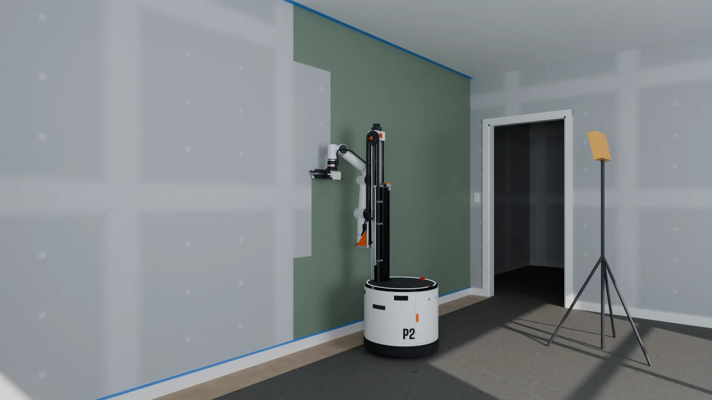
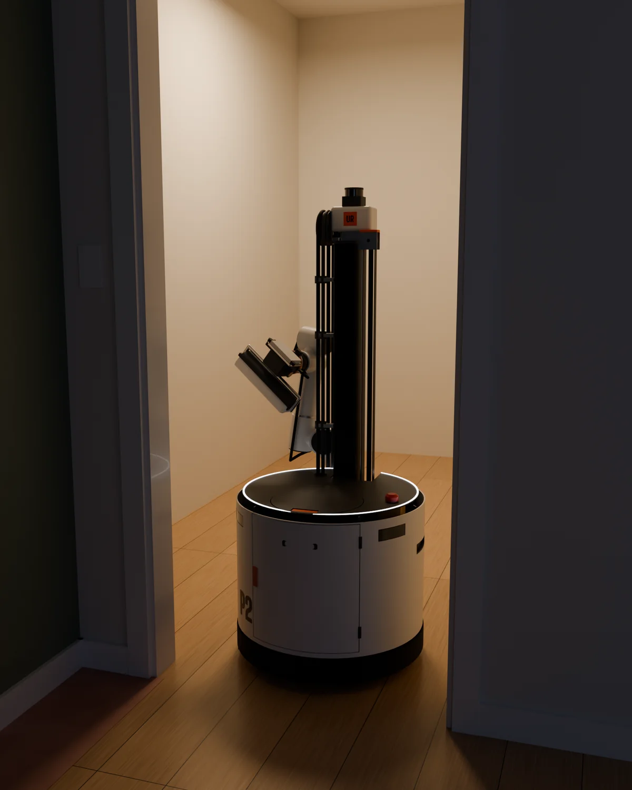
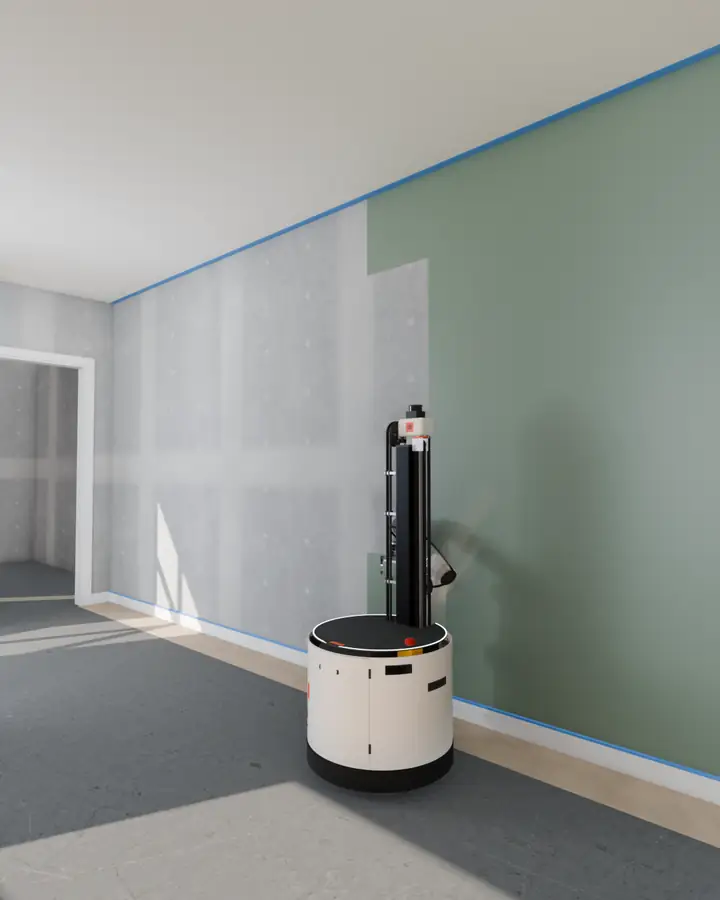
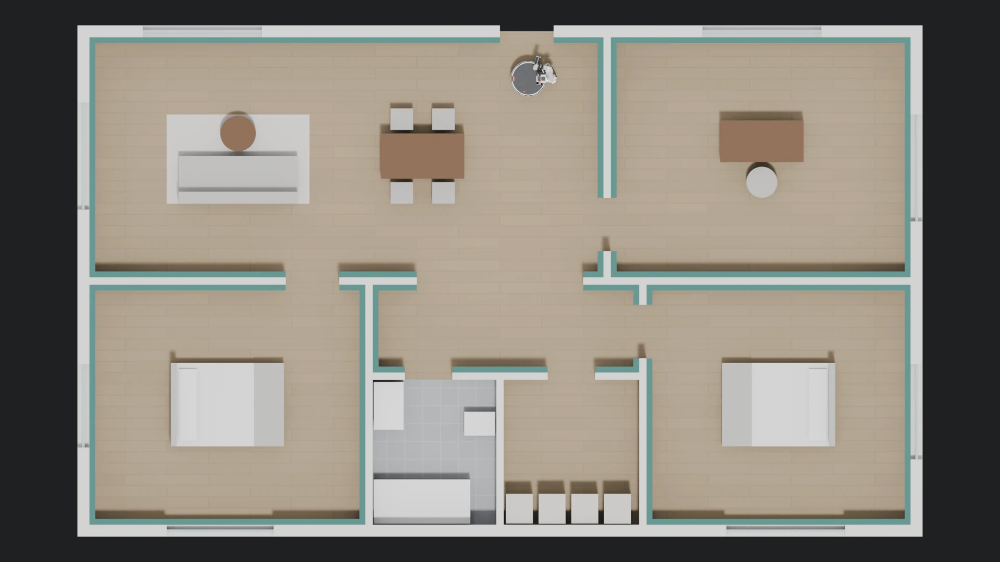
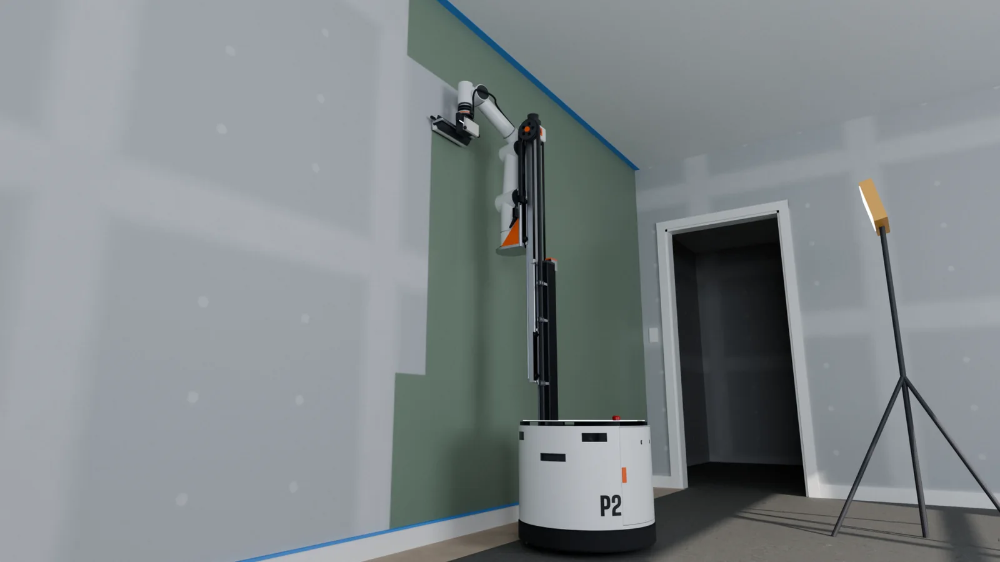
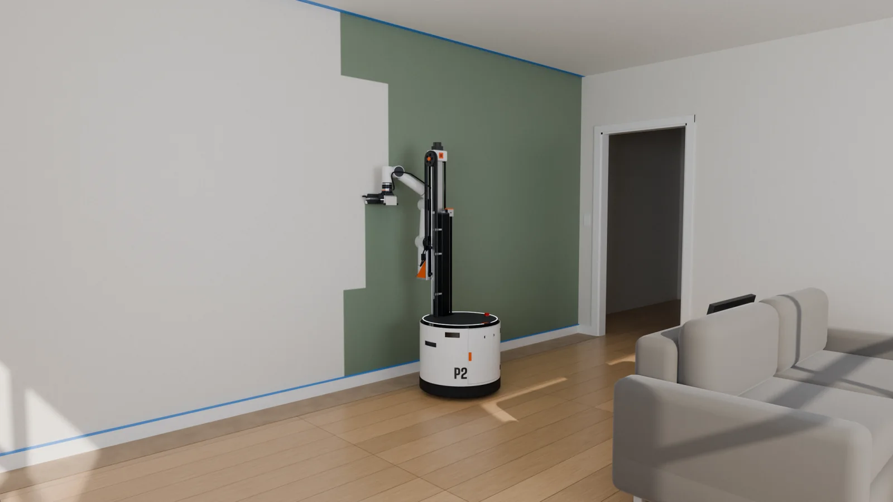
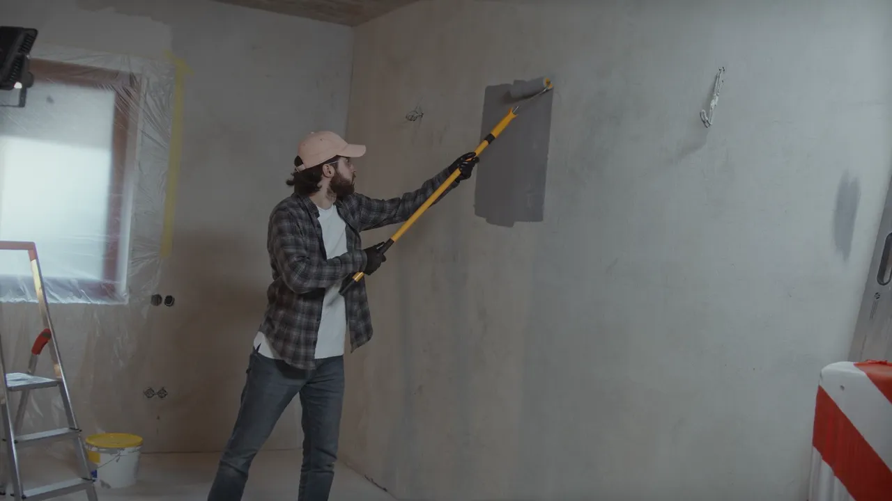

In development
Interior
painting
robot
Tape it. Load it. Leave.
P2 rolls interior walls and ceilings. Prep the room the way you would for a painter, pour in the paint, and P2 is designed to do the rolling and the cutting in on its own.
P2 has not been built yet. The images are CAD renderings, and the numbers come from our simulations. We are building the first bench rig in Miami, and during pilots our team will stay on site.
How P2 works
Your part is the prep. The rest is designed to be P2’s.
Prep
Pull the furniture 1 m off the walls, tape the trim and the ceiling line, and lay the paper runner. The same prep a painter asks for.
Load
Pour the paint into the sealed tank. P2 maps the room with LiDAR and cameras, finds every wall, outlet, door and window, and gives you a finish time. Anything still against a wall gets flagged before it starts.
Leave
Go. P2 paints, covers its roller while each coat dries, and messages you when the room is done. Pull the tape and you are finished.

One room, start to finish
Scroll through one simulated bedroom.

6:00 PM
Room is prepped.
Tape is on the trim, the furniture is off the walls and the paint is in the tank.
6:05 PM
P2 starts.
It maps the room, finds every wall, outlet and window, and sends you a finish time.
7:30 PM
Walls, lane by lane.
Floor to ceiling, one roller width at a time, with a camera checking every lane.
9:40 PM
Then the ceiling.
The roller turns face up and P2 drives slowly under it, one strip at a time.
11:05 PM
Room done. Report sent.
Photos of every wall land on your phone. P2 rolls on to the next room.
Room by room
At each stop, P2 sets two feet down, cuts the edges with a guided pad, then rolls the wall in lanes from floor to ceiling. A camera checks every panel before it moves on. After the last coat, the paint in the line drains back to the tank.
Simulated: a 12 by 12 ft bedroom with an 8 ft ceiling takes 2.6 hours of rolling and 5.1 hours start to finish, two hours of drying included.


The job report
Every room ends with one.
Illustrative report, simulated job
Unit 3B, bedroom 2
P2 014
- Shift 19:00 to 00:06, drying included
- 5.1 h
- Painted Walls two coats, ceiling one, 2.6 gal
- 481 sq ft
- Missed spots Checked by camera after each coat
- 0
- Punch list
- Nail pop, east wall, 1.2 m up. Photo 7.
- Clear to enter
- 01:10, dry to the touch. Pull the tape before noon.
Not a real job yet. The figures come from the same simulated bedroom.
Where it works
The same robot and the same prep, whether the room is a new unit or a lived in home.

On a jobsite
More rooms per painter.
- Apartments, hotel rooms and offices, with walls and ceilings up to 9 ft.
- Your painters prep the next unit while P2 rolls this one.
- Each unit gets its own report, tagged with the robot that did it.

At home
No crew in the house all day.
- The furniture stays in the room, pulled off the walls.
- A photo of every wall lands on your phone.
Why P2
Most of what you pay for a paint job is labor: 75 to 95 percent of a professional interior job, according to Angi. P2 is built to take that labor off the bill.

of a person’s time per bedroom with P2, taping included, against about 6.5 hours for a painter by hand. Both are our estimates.
- Lower cost
- P2 does the slow part of the job, the rolling and the cutting in. Our goal is a price per room below what a painting crew charges.
- No overspray
- A roller puts no mist in the air, so there is nothing to wrap in plastic.
- No trips to the tray
- A pump feeds paint through the roller core from a sealed 6 gal tank, the same idea as the power rollers painters already use. One tank holds enough for about two bedrooms.
- Nobody on a ladder
- The mast does the reaching. Falls from ladders are among the common hazards of the trade.
Painters are hard to hire: about 24,900 openings a year in the U.S. through 2035. P2 is built to give each one more finished rooms a week.
Sources: NerdWallet, Cost to Paint a House in 2026, citing Angi; U.S. Bureau of Labor Statistics, Occupational Outlook Handbook, Painters; Bob Vila, review of a Wagner power roller. Times and paint use for P2 come from our simulation; P2 is in development.
Progress
Finished the CAD design of P2 and its paint tool, with concepts for later tools. Simulated a full bedroom, start to finish. Checked reach and stability: in the worst case P2 keeps 82 mm of tip margin. Listed 43 failure modes, each with a design answer and a test. Animated a job from the CAD and the arm’s kinematics.
Before that
Designed P1, a spray robot for commercial interiors. Its base and mast work carried into P2.
Next
Build a bench rig with the arm, the Tool Port and the paint tool, and paint test walls to measure drips, lap marks and cut lines.
After that
Build the full robot, then run the first pilot jobs, on jobsites and in homes in South Florida.
Company
Porter Robotics builds robots for construction work, starting with paint. We are based in Miami. The company was founded by Onat Cakici, an aerospace engineer. We design P2 in house, from standard parts.
About the company and its founder
Investors and press: write to info@urbanrobotics.com.
Get a room painted
P2 is not painting real jobs yet. Tell us about a room and we will call you when pilots start in South Florida. It takes 30 seconds.
Done.
Your email app opened with the request filled in. Hit send and we will get back to you within a day. If nothing opened, write to info@urbanrobotics.com.
Rather talk? Book a 15 minute call or write to info@urbanrobotics.com. Nothing is for sale yet. The form only opens your email app; this site stores nothing and has no cookies or tracking.